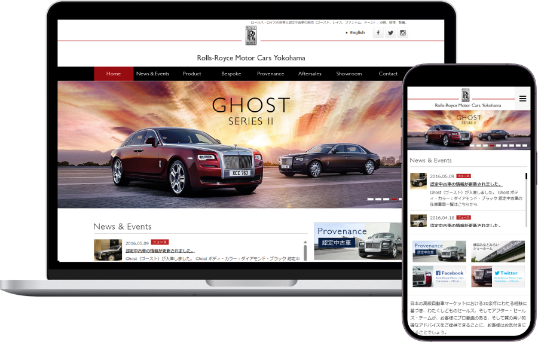
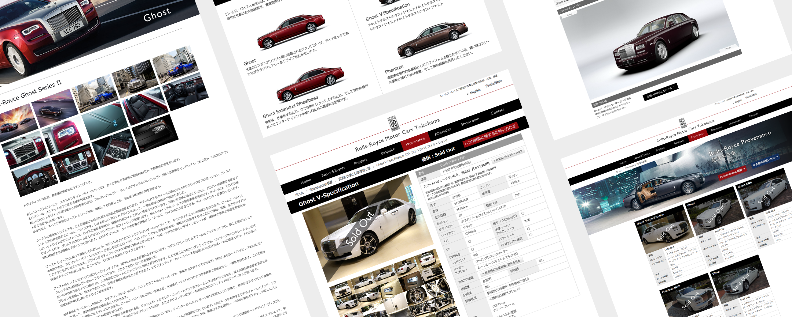
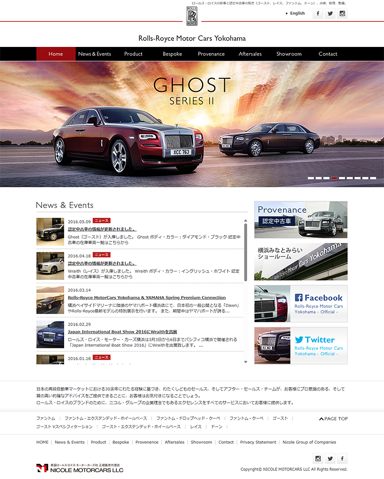
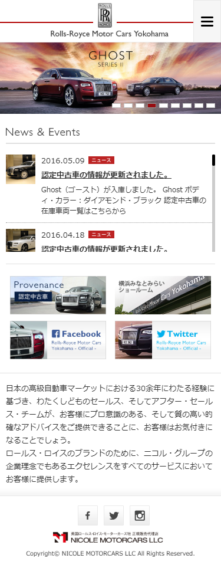

WORKS
つくったもの
ロールス・ロイス・モーター・カーズ 横浜
WEB
- 担当業務
-
ディレクター
デザイナー
フロントエンドエンジニア
- 制作期間
-
ディレクション : 2週間
ワイヤーフレーム : 2週間
デザイン : 2ヶ月
コーディング：3ヶ月 - 予算規模
- 100万円
- 使用ツール
- Photoshop / Dreamweaver
- 使用言語
- HTML / CSS / JavaScript / jQuery
※本リンクはリニューアル後のサイトです

ロールス・ロイス正規ディーラーWEBサイト制作プロジェクト
英国高級車ブランド Rolls-Royce Motor Cars の正規ディーラーである Nicole MotorCars の公式サイト制作において、ディレクションからデザイン、フロントエンド実装まで一貫して担当しました。
世界最高峰のラグジュアリーブランドにふさわしい世界観を表現するため、ビジュアル設計と情報設計を重視。ブランドの品格や信頼性が直感的に伝わるよう、余白設計・タイポグラフィ・配色に細部までこだわり、洗練されたUIデザインを構築しました。
また、ショールーム来訪や問い合わせへの導線設計を最適化し、ユーザーがストレスなくアクションへ移行できるUXを実現。高価格帯商材における「安心感」と「特別感」を損なわない情報設計を行いました。
レスポンシブ対応を前提に設計・実装を行い、PC・タブレット・スマートフォンすべてのデバイスで一貫したブランド体験を提供。高解像度ビジュアルを活かしながらも、パフォーマンスと表示速度にも配慮した実装を行っています。
さらに、ディレクション、ワイヤーフレーム設計、デザイン、コーディングと、長期プロジェクトを段階的に推進。関係者との連携を図りながら、品質とスケジュールの両立を実現しました。

ABOUT
概要
- クライアント
-
Nicole MotorCars合同会社
- 課題
-
- 世界最高峰のラグジュアリーブランドであるロールス・ロイスの世界観を、WEB上で正確に表現する必要があった
- 高価格帯かつ限られた顧客層に向けた、品格あるUI/UX設計が求められた
- ブランドの最新CIに準拠しつつ、日本市場に適した情報設計への最適化が必要だった
- 目的
-
- 正規ディーラーとしての信頼性とブランド価値を最大限に訴求する
- 富裕層ユーザーに対して、特別感・所有欲を喚起する体験設計の実現
- 来店・問い合わせにつながる導線設計の強化
- 取り組み
-
- ディレクションからデザイン・フロントエンド実装まで一貫して担当
- ブランドガイドライン（CI）を徹底的に分析し、トーン＆マナーを設計
- 余白・タイポグラフィ・動き（アニメーション）にこだわり、ラグジュアリー体験を演出
- ワイヤーフレーム段階でユーザー導線と情報の優先順位を明確化
- JavaScript / jQuery を活用し、滑らかで上質なインタラクションを実装
- 成果・実績
-
- ブランドの世界観を損なうことなく、WEB上での高級感・信頼性の表現に成功
- ユーザー体験の向上により、直感的でストレスのないサイト構造を実現
- ディーラーとしての価値訴求を強化し、ブランディング向上に寄与
- ターゲット
-
富裕層を中心としたハイクラスユーザーや、ラグジュアリーカーに高い関心を持つ経営者層・成功者層を主なターゲットとし、ブランド体験そのものに価値を見出すユーザーを想定しています。
- クライアントの要望
-
ロールス・ロイスのブランドイメージを損なうことなく、正規ディーラーとしての信頼性と格式を表現すること、またショールームへの来訪意欲を高めるような上質なWEB体験の提供が求められました。
CONCEPT
コンセプト
- デザインイメージ
-
重厚感と洗練を兼ね備えた、静けさの中に品格を感じるデザイン。過度な装飾は避け、余白とタイポグラフィを活かしたミニマルかつラグジュアリーな表現を採用しています。
- コンセプト
-
余計な情報や装飾を削ぎ落とし、本質的な価値のみを際立たせることで、ロールス・ロイスが持つ“静かな圧倒的存在感”を表現。視覚・操作体験のすべてにおいて上質さを追求し、選ばれた顧客にふさわしい特別な世界観を構築しています。
- カラー
-
ブラックを基調に、ホワイトとグレーを組み合わせたモノトーン構成。
アクセントとして控えめなレッドを使用し、気品と高級感を演出しています。

